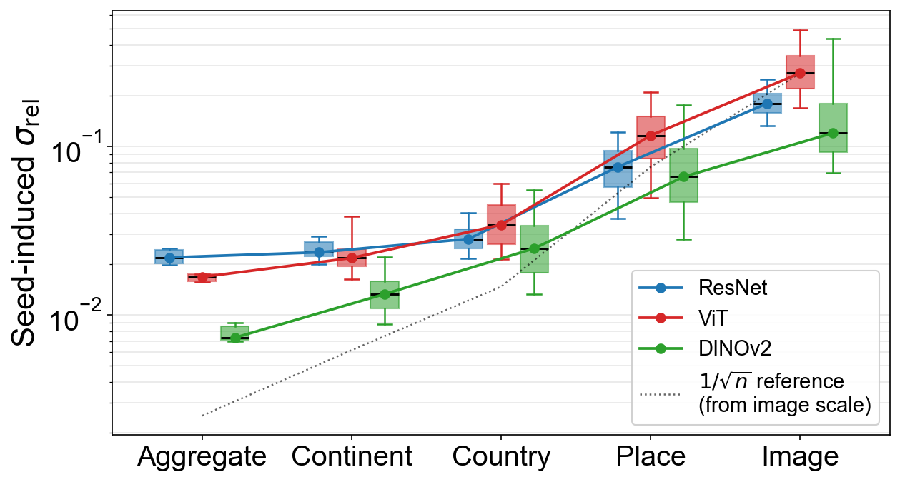
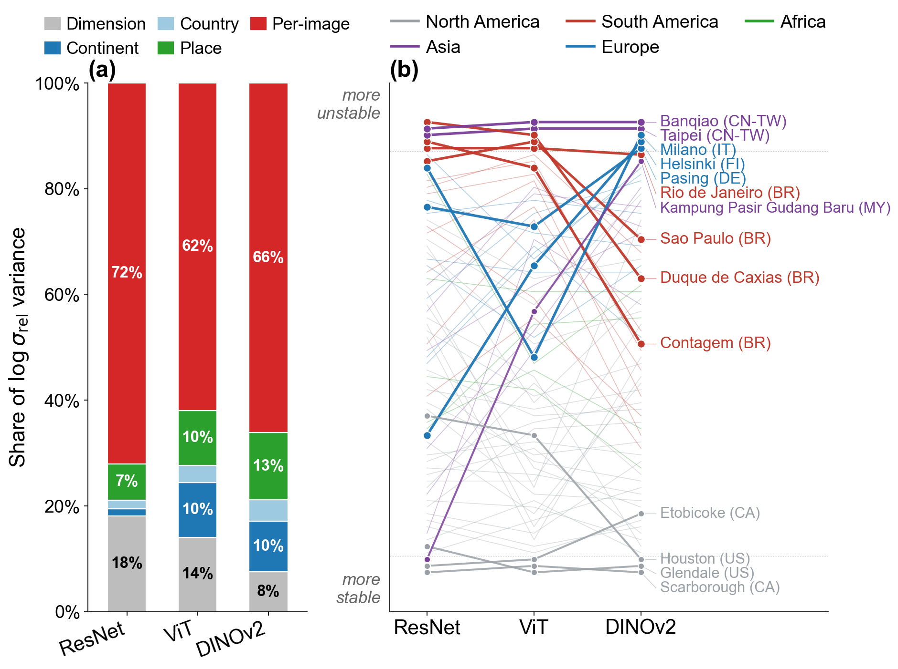
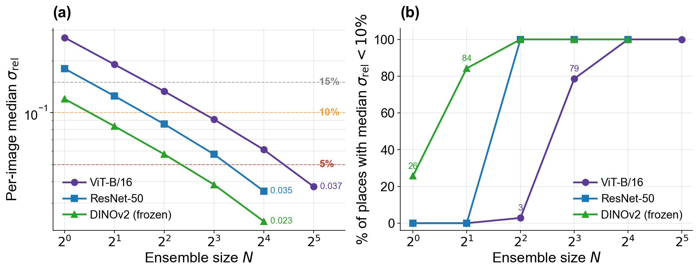

12–27%
Local instability is substantial
Per-image variability is roughly an order of magnitude larger than the aggregate metric, despite using the exact same model predictions.
Accepted full paper · ACM SIGSPATIAL 2026
Global averages can make a model look reliable while its predictions remain highly unstable for individual places and street-view images. We measure that gap across 328 training runs, three vision architectures, and five spatial scales.
Proceedings citation and paper DOI are forthcoming. Use the provisional citation.
The central result
At aggregate scale, every architecture appears comfortably stable. Disaggregation reveals an order-of-magnitude increase in variability—and even reverses the stability ordering of ResNet-50 and ViT-B/16.

12–27%
Per-image variability is roughly an order of magnitude larger than the aggregate metric, despite using the exact same model predictions.
10–26%
A meaningful share of seed-induced variance is organized by continent, country, and place—not merely left as image-level noise.
4 / 4 / 16
ResNet-50 and DINOv2 need four seeds to stabilize all core places at the 10% threshold; ViT-B/16 needs sixteen.
What the scale reveals


“Reproducibility in GeoAI is not a single property, but a family of properties indexed by evaluation scale.”
Open reproducibility package
The public release includes portable data preparation, training, analysis, and figure-generation code. Prediction and metadata packages are distributed separately to keep the code repository lightweight.
$ git clone https://github.com/yingjinghuang/Reproducibility4UrbanPerception.git
$ cd Reproducibility4UrbanPerception
$ conda env create -f environment.yml
$ conda activate perception_stable
$ python scripts/analysis/12_tier1_variance.py
$ python scripts/figures/15_figures.pyCitation
The paper has been accepted as a full paper at ACM SIGSPATIAL 2026. The provisional citation below provides a stable placeholder until ACM publishes the proceedings DOI and final bibliographic details.
@inproceedings{huang2026multiscale,
author = {Yingjing Huang and Krzysztof Janowicz and
Mina Karimi and Zilong Liu and Songling Wang and
Annika Suess and Alexandra Fortacz-Lazan},
title = {Investigating the Multi-Scale Reproducibility
of {GeoAI} Models for Urban Perception},
booktitle = {Proceedings of the 34th ACM SIGSPATIAL
International Conference on Advances in
Geographic Information Systems},
year = {2026},
note = {Accepted full paper; DOI forthcoming}
}